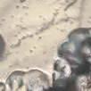
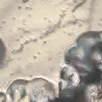

Hoarding
A new form of collective behavior in amoebae

We discovered the amoeba, Thecamoeba homeri, that displays remarkable collective behavior. Through timelapse microscopy, we can observe these behaviors in action.
Moving, eating, and merging together
1X view of a culture
A closer look (5X)
Together, thousands of amoebae in a culture will form macroscopic circular clusters up to 3 millimeters in diameter. Unlike other social amoebae that acheive multicellularity for dispersal reasons, Thecamoeba homeri performs tasks beyond dispersal. Cells will not only eat and move as a group, but also carry particles and other organisms they come across.
Hoarding of particles by the group
Collecting pollen
Note: pollen is nutrient-rich and enables the growth of detritivores in the environment.
Halted orb with pollen in it
Collection and abadonment of mica powder
Cells that touch a orb will be sucked into the orb. This indicates a high level of commitment. Take note that orbs will merge into each other upon contacting, and they will merge their hoarded materials as well.


Through time-lapse microscopy, we observed cells gathering particles on the agar surface while gradually being joined by others. Groups that collected organic particles (pollen and dung) remained stable, but those that collected only mica eventually abandoned all they collect. We hypothesize that this behavior may serve to 'farm' prey microbes, such as bacteria, by storing organic material for decomposition in their natural soil environment. Interestingly, Thecamoeba homeri was originally found in soil, highlighting the importance of recreating environmental stimuli in laboratory cultures to observe behaviors that are usually absent in sterile conditions.
Interactions with other organisms
Chlamydomonas reinhardti

Hoarded Chlamydomoans reinhardti eventually die within orbs, turning brown. How they die, we do not know. Cells within orbs will have algae within, signifying that they are eating the algal cells. However, most collected algae are between the Thecamoeba cells along with a dense bacterial matrix.
Take a look inside:

Do orbs split apart?

Yes, but also no.
A new form of collective behavior in amoebae
We discovered the amoeba, Thecamoeba homeri, that displays remarkable collective behavior. Through timelapse microscopy, we can observe these behaviors in action.
1X view of a culture
A closer look (5X)
Together, thousands of amoebae in a culture will form macroscopic circular clusters up to 3 millimeters in diameter. Unlike other social amoebae that acheive multicellularity for dispersal reasons, Thecamoeba homeri performs tasks beyond dispersal. Cells will not only eat and move as a group, but also carry particles and other organisms they come across.
Collecting pollen
Note: pollen is nutrient-rich and enables the growth of detritivores in the environment.
Halted orb with pollen in it
Collection and abadonment of mica powder
Cells that touch a orb will be sucked into the orb. This indicates a high level of commitment. Take note that orbs will merge into each other upon contacting, and they will merge their hoarded materials as well.

Through time-lapse microscopy, we observed cells gathering particles on the agar surface while gradually being joined by others. Groups that collected organic particles (pollen and dung) remained stable, but those that collected only mica eventually abandoned all they collect. We hypothesize that this behavior may serve to 'farm' prey microbes, such as bacteria, by storing organic material for decomposition in their natural soil environment. Interestingly, Thecamoeba homeri was originally found in soil, highlighting the importance of recreating environmental stimuli in laboratory cultures to observe behaviors that are usually absent in sterile conditions.
Chlamydomonas reinhardti
Hoarded Chlamydomoans reinhardti eventually die within orbs, turning brown. How they die, we do not know. Cells within orbs will have algae within, signifying that they are eating the algal cells. However, most collected algae are between the Thecamoeba cells along with a dense bacterial matrix.
Take a look inside:
Do orbs split apart?
Yes, but also no.